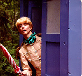
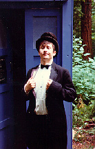
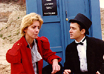

The Doctor Who Movies
With Kill Roy in the can
(but not completed) in the fall of 1983 I became a die-hard fan
of Doctor Who. Early in 1984 I read that the World Science
Fiction Convention in LA that year was going to have a film
contest with judges like Gary Kurtz (the producer of Star Wars).
I decided it was about time to do a science fiction movie and Doctor
Who seemed a logical extension of this.
I knew I couldn't compare with the Tom Baker episode that were
being run (practically the only exposure I had to Doctor Who
at the time), so I decided I needed to do something that would be
a complete departure from anything anyone had ever seen on the
show before: a female Doctor.

Barbara Benedetti (left)was cast in the part
on the recommendation of A.M. Collins, a Seattle playwright whose
Angry Housewives Barbara was currently appearing in.
Barbara had no idea who Doctor Who was, I think she just
took it on faith that I had made the whole thing up. Barbara then
recommended her co-star, Randy Rogel (then playing a character in
Housewives called "Lewd Fingers") to play Carl
the Chimney Sweep. In the 1990s Randy was a writer on Animaniacs
for Warner Brothers Animation. A script he wrote for Batman:
The Animated Series won an Emmy in 1993! Today he writes for
Disney Animation.
The script (originally written by me and heavily edited by
Cheryl Read, Linda Bushyager and Deb Walsh) went through many
drafts, including one less than a week before we began filming.
This drove my production manager, Mark Schellberg (who can
briefly be seen near the end of the film as a tied-up workman)
nuts, since it was his responsibility to plan out the film's
logistics.

Except for some rain, filming was
efficiently accomplished over a 10 day shoot. Because of the
deadline of the Worldcon's film contest, I had less than 60 days
to complete editing and have a print out of the lab. Many
restless nights were spent trying to get the film ready, with the
only break taking place during Westercon where a special trailer
was shown. The 4th of July weekend was also when the 2nd Unit
filming took place in order to capture the shots of the stone
pillars the Doctor and Company find in the woods (if you notice
very carefully you'll see the actors and the pillars are never in
the same shot together -- the grass was about two feet shorter as
well when we got around to the last shots).
The film was completed on time and sent off to the Worldcon.
Meanwhile, the premiere was held very early on a Sunday morning
with no publicity whatsoever at Timecon in San Jose, California.
My spies at the Worldcon informed me that only the finalists
would be actually screened for attendees at the con -- but I
could count on being shown -- wink, wink, say no more! Needless
to say, I went overboard on the publicity machine printing up
dozens of flyers to spread all over the convention to alert
everyone to the screening. As a result, the room was packed as my
film was shown. Sadly, two-and-half hours later (with the room
nearly empty), someone else was announced the winner, but at
least people had seen my movie. What was really strange was as we
were leaving the room I heard someone say, "Gee, I didn't
know the BBC had a female Doctor." Did someone think this
was genuine BBC product?
Thus it went for the next six months or so, the film passed
into obscurity until a screening at Norwescon in March 1985. The
audience went nuts and I was immediately asked if I was going to
make a sequel. Bogged down with trying to finish Kill Roy, a sequel was the last
thing on my mind. Little did I know what lay ahead...
Credits:
Doctor Who: The Wrath of Eukor
30 minutes. 16mm. Filmed June 1984, released August 1984.
Cast. . . Barbara Benedetti as The Doctor, Randy Rogel as
Carl Evans, Jim Dean as Grant, Kevin McCauley as Harris, Michael
Smith as Tate, Tom Lance as Wallace.
Written by Cheryl Read (credited). Produced and Directed by Ryan
K. Johnson. (Little known fact: The title of this movie was
stolen from a Super-8 movie my buddy Dave Troffer did in high
school. I had no idea what "Eukor" was supposed to be,
but it sounded like a good title for a Doctor Who episode.)
If I had a dime for every misspelling of "Utomu", it
would have paid for the movie! In August 1985 I formed the Doctor
Who fan club, The Society of the
Rusting TARDIS, the secret agenda of which was to help me
make another movie. My co-conspirator was an employee of Group W
Cable (now AT&T), Howard Carson, and he said he could arrange
for us to make the entire production using equipment at the
Public Access Studios of Group W for a fraction of the cost of
what Wrath of Eukor cost. Even though I wasn't thrilled
with the idea of shooting on videotape (3/4" videotape for
that matter), I figured at least it would be in the spirit of the
real BBC Doctor Who show.
Randy Rogel had been bugging me to let him do a musical number
for some time, though I couldn't figure out how to work it into a
Doctor Who movie. Eventually inspiration struck and I
decided to pursue a medieval theme, abetted by the Society for
Creative Anachronism. They proved to be a big help, greatly
increasing the production value of the movie. Like Wrath of
Eukor, the script went through a lot of changes, many of them
at the request of Linda Bushyager. I rented a warehouse near the
old Kingdome site in Seattle and filming took place over a
terribly cold Veteran's Day weekend, 1985. (To this day, the crew
on this movie, the Rusting TARDIS members, has not let me live
down just how cold it was inside the warehouse. Was it my fault
there was no heating?)
The following weekend we spent two days in relative warmth at
the Group W public access studios in North Seattle. This was
probably the harshest shoot I've ever done: I had to record
nearly 12 pages of dialog in one day! It was a killer. But we got
it done. Jim Dean returned from Wrath of Eukor to play the
King, and future writer T. Brian Wagner had a small part as well.
Howard and I edited the movie over Christmas as there wasn't a
big demand for the editing suites at public access. The film was
finished just after New Years and premiered at Rustycon. I made
up an hour long compilation tape of both Wrath of Eukor
and Visions of Utomu to run on Public Access, which they
have up to this very day (last known screening was August 20,
1995 -- Seattle AT&T cable TV subscribers should keep their
eyes on Channel 77 for its next appearance.)
With my blessing, Howard was preparing to take over the
franchise of the female Doctor, with me running shotgun. However,
things were going to turn out a bit different...
Credits:
Doctor Who: Visions of Utomu
32 minutes. 3/4" videotape. Filmed November 1985, released
January 1986.
Cast. . . Barbara Benedetti as The Doctor, Randy Rogel as
Carl Evans, Wesley Rice as Utomu, Stasia Johnson (no relation) as
Princess Aldraina, Robert Eustace as Prince Germain, Jim Dean as
the King, Randy Dixon as the M.C., Joseph McCarthy as Formore,
and an orange (eagle-eyed spotters will notice that as a joke
there is an orange in every scene in the movie -- the crew found
this endlessly amusing).
Written, Produced and Directed by Ryan K. Johnson.
With it being 1986 and two Who films behind me, I felt
it was time to move on and do something original. Events
conspired against me however. I decided to apply for a grant from
the King County Arts Commission in order to make a TV pilot for a
science fiction TV show. Howard Carson meanwhile was developing a
Doctor Who script by Andrew Dolbeck called Strange
Gifts. The plot concerned the Doctor and Carl landing on a
planet that worshipped death. Time Lords being virtually immortal
because of regenerations were an abomination to the locals, who
viewed the Doctor as Satan incarnate. The plot climaxed with Carl
dying (!), the Doctor violating the First Law of Time by going
back to save him, and finally being put on trial by the Time
Lords (remember, this was before Trial of a Time Lord had
been announced as the 23rd season of Doctor Who.) A
two-part script which included a cliffhanger was written and
distributed to the actors. By this time, exposure on Public
Access had earned an unexpected benefit: an actor named Michael
Santo who was as nuts about Doctor Who as the rest of us,
had seen Barbara in the movies and wanted to know how he could
get involved. Barbara relayed this information to me, and we
wrote a specially-tailored part to take full advantage of
Michael's strengths.
Howard, who was to bankroll the movie, was involved in a car
accident and ultimately had to declare bankruptcy. Then, while
reviewing the script, Linda Bushyager raised some points about
the plot which just simply couldn't be resolved. We realized we
asked the audience to swallow just too much stuff. But taking any
of it out would undermine the entire story. We had to shelve the
script and start over. I should say too that we probably bit off
more than we could chew in terms of the production value this
story required. The few thousand dollars we had to spend just
wouldn't have covered the cost of making what we had in mind.
Back to the drawing board... I persuaded the King County Arts
Commission to give me a grant of $1000 to make a pilot, so I
decided to go ahead and do one anyway but put the Doctor in it.
In retrospect, this may not have been the best move in the world,
but it seemed a good idea at the time. The script as written was
called Tripp In Space and it was intended to be a science
fiction soap opera of sorts, with the pilot serving as the  first two episodes. However, after filming the
first half of the story, the entire production collapsed and we
decided to rename the project and concentrate on what we had. In
consolidating the footage, some scenes with the Doctor and Komar
(Michael Santo, left with Eric Anderson) were cut, and the
ending changed slightly.
first two episodes. However, after filming the
first half of the story, the entire production collapsed and we
decided to rename the project and concentrate on what we had. In
consolidating the footage, some scenes with the Doctor and Komar
(Michael Santo, left with Eric Anderson) were cut, and the
ending changed slightly.
With myself acting as producer, Howard Carson directed the
movie, which was shot by Alan Halfhill, a freelance cameraman I
had met at Norwescon that year who owned a Betacam camcorder.
Filming commenced in the Physics Lab at the University Washington
during a Huskies Game (if you look carefully at one of the
exterior scenes you can see a crowd of people walking home after
the game). During post production I ran into a guy I knew, John
Eineigl, who was now working at Artronix and had access to their
Quantel Harry FX equipment and agreed to do our special effects
and credit sequences for nothing! I also managed to rent a
helicopter for a bargain $75 to fly over Seattle for the credits.
We managed to film Husky Stadium three days before the original
North Stands collapsed during construction! Kathy Schickling,
working at the time at KIRO's Third Avenue Productions, edited
the movie in her spare time and the entire movie was assembled on
their 1" CMX editor. For the first time I was able to get
original music, performed by Dan Wilcken, which
greatly helped the movie and provided a catchy theme tune. With
this movie I thought I finally had Doctor Who out of my
system for good. But Michael Santo had other ideas...
Credits:
Pentagon West: A Doctor In the House
28 minutes. Betacam videotape. Filmed September 1986, released
May 1987.
Cast. . . Michael Santo as Komar, Laura Kenny as Iz (she
once had a cameo on Northern Exposure as Death), Laura
Sweany as Robin, Josh Conescu as David, Jonathon Stewart as Alex,
Eric Anderson as Simon, Barbara Benedetti as The Doctor, Randy
Rogel as Carl.
Directed by Howard Carson. Written and Produced by Ryan K.
Johnson.
I was visiting Michael Santo at his apartment one day when he
casually asked if I was going to be doing another Doctor Who
movie. I told him it was unlikely, given the amount of time and
money I had expended so far. Michael said I should and that he
wanted to be the Doctor. "But I already have a Doctor,"
I told him. "Nah, Barbara doesn't care," he responded.
I told him I'd have to think about it.
It was true, Barbara had no innate love of Doctor Who
though she enjoyed making the movies. Michael on the other hand
was a True Fan and it was obvious he had been eyeing the role
since watching my videos on Public Access. But I really felt
Who-ed out personally. If Michael wanted to make a vanity
project, why couldn't he pay for it? I talked to my a fellow
filmmaker, Janice Findley (who had played "Adrian Barbeau's
corpse" in Escape From Seattle),
and asked her what I should do? Her advice was, "How often
are you going to have these great actors begging you to be
in your movies?" I had to admit, she had a point. The
Rusting TARDIS members certainly weren't adverse to another
production either.

I decided we would do a small "wrap-up"
movie to finish Barbara's tenure as the Doctor and to introduce
Michael at the end. At the time we were planning the movie, Alan
Moore's landmark comic Watchmen was taking the world by
storm. I thought it would be neat to do something in the same
style: a bit avant garde and surreal. I spoke with T. Brian
Wagner (who had come up with some interesting proposals regarding
The Prisoner), and asked him to come up with a script. My
only requests were, "It be weird, 15 minutes long, and
Barbara's dead at the end...she could trip on the sidewalk and
kill herself, I don't really care how it happens." So T (as
we referred to him) went off to work on it.
By fall of 1987 T delivered a script to me, Broken Doors,
that was exactly what I had been looking for. The only problem
was it was way too ambitious for what we could afford to shoot.
At one point we needed to build a British pub and have a big
fight scene while the Doctor played chess with the mysterious
Manager. I told him we'd have to cut it out (we lost a really
great gag along the way though: in the scene Carl would be
confronted by the publican who accused him of doing something
nasty in his past. Carl would deny it at which point the man
said, "What about...Barbara Johnson!" a play on both
Barbara's and my name.) The second thing that concerned me about
the script was it firmly implied that the Doctor did not
like being a woman, and the entire story was a subconscious
attempt to force a regeneration. I told T it had to go. He argued
with me citing a line in Wrath of Eukor when the Doctor
sees herself in a window for the first time and says, "This
is worse than I thought. This is all wrong...This can't happen to
me!" I said, "T, I wrote that line, that's not
what it meant. The Doctor is always (nearly) unhappy with his
appearance at first." T grumbled but I made him change it.
The script now ready, I decided to once again hand off the
directing chores to someone else. My friend Henry Gonzalez had
been busily working on his sequel
to The Count (and in fact, here in 2001 he still is!) with
a fellow named Steve Hauge (rhymes with "howdy") as
Assistant Director. I had observed Steve in action and thought he
demonstrated The Right Stuff. I gave him a call and asked if he'd
like to direct a movie for me. He had never been a director
before but I said I liked the way he worked and I needed someone
I could trust. Steve was completely unfamiliar with Doctor Who,
but after an animated demonstration by me and a few videos, he
felt he could handle it. Alan Halfhill was back as our cameraman,
and Steve got the improbably named Lach (pronounced
"lock") Loud to be the designer and set builder. Lach
went from our production to the first season of Northern
Exposure a few years later (look for him in the end credits
as "Lachlin Loud"). Lach grasped immediately the
surreal nature of the story and designed some remarkable sets
that the Rusting TARDIS members began constructing in a warehouse
near downtown (heated this time!).
The movie essentially was a three-man (er, two men and a woman
that is) show, so casting was not a problem. We decided to have
Michael play the dual role of the Manager seeing as villains were
his forte, plus the rather cool implication it had once he became
the Doctor (we were already thinking sequel possibities). T's
script had called for all sorts of things from the first three
movies to reappear to confront the Doctor again. From Wrath of
Eukor came the stone pillar. From Visions of Utomu
came the ubiquitous orange. And from Pentagon West, the
strange device the Doctor was going to use against Komar. Also
from Utomu we wanted the hulking guard played by Gareth
Davis to reappear to vex Carl. Gareth was more than eager to suit
up again (it was hard to believe it was now two years later),
although a continuity mistake was made on which side of his face
his scar appeared (although it was a mirror universe he
appeared in, right?).
Speaking of mirrors, you're probably wondering where all the
ones that appeared in the film came from. The answer: everyone in
the crew was required to bring as many mirrors from home as they
could. Nancy Hewes also went out and bought some 1x1 foot
redecorating mirrors to pad things out. Amazingly, no mirrors
were broken during filming! The trick of course was not to catch
the camera or the crew during the sequences in the mirror room.
The solution was to suspend all the mirrors above a certain level
and then keep the camera below that level. During the 360
degree shot, the only people in the room were Alan the cameraman,
Steve the director, and the two actors (in this scene, as in a
few others, the Manager was played by T. Brian with Michael's
voice dubbed in. In the scene in the quarry, the Manager was
played by Gary Watts.)
Little known facts about the movie: The letters the Doctor
steps on in order to navigate the maze are D-E-A-T-H, but did you
notice which letter is missing from the alphabet? Answer
below. (T's script had worked out where all the letters were
supposed go and in which row). The letters themselves were traced
from huge transparencies I had made at work. Someone got the
bright idea of pasting them on the 1x1 mirrors and letting them
spin around. The letters used in the room were our old friends,
D-E-A-T-H, again.... Yes, those were real jelly-babies the
Doctor used to defuse the maze, purchased from The British Pantry
in Redmond, Washington.... The quarry used was in Renton,
Washington and at first the crew was very excited that finally
we would get to film in a quarry. However, this enthusiasm was
soon dissipated after having to lug the TARDIS in pieces a
quarter mile to the location from the road.... Broken Doors
was our only Doctor Who movie not to have the ending
massively changed. All three previous movies had needed a fix of
one sort or another: The Wrath of Eukor was supposed to
end with the Doctor saying, "I am the Doctor" but
Barbara's reading of the line was all wrong. I had her redub it
and the movie ends with a bit of a gag with Grant and Carl
looking on saying, "She's going to give him some
headache." which originally had gone before the
Doctor's line. Visions of Utomu originally had enough
footage to be a two-parter and in fact Howard Carson and I edited
it that way complete with cliffhanger. This longer version has
only been ever shown once (to a test audience at a Rusting TARDIS
meeting) and now sits deep in my vault (only to be released again
on the Special Edition Director's Cut DVD -- if we ever make
one). What was supposed to happen, and was filmed and edited, was
the character of the Princess was going to become a companion
(kind of a Leela-in-reverse who would evolve from a fairy
princess to a ruthless warrior), but when we watched the rough
cut it became evident this wasn't going to work. So most of the
scenes with the Princess were cut drastically, and the ending
changed so now she didn't go off with the Doctor and Carl. In Pentagon
West, the final scene was part of the second story that was
never shot. As a result, we had to add a hastily dubbed line by
the Doctor in order to have some kind of ending to the
movie.... Final bit of trivia: Michael Santo was credited for
playing the Manager in Broken Doors as "E. Kim
Tonas", an anagram of his name (nobody ever seems to catch
this).... The missing letter in the maze was I.
Filming, like on Visions, was done over the Veteran's
Day weekend in November, though in much warmer conditions than
two years previously. While the interior sets were being
prepared, all the exterior scenes were filmed, including a scene
at a residence hall at the University of Washington. It was a
long weekend, but everything went smoothly. Due to an impending
deadline, Barbara's death scene was done with little fanfare or
ceremony, in fact she just pulled off her shirt and handed it to
Michael so he could regenerate it into it. Michael ad-libbed his
final line, which was a perfect capper to the movie. (Weeks later
in post production when we were dubbing all the mirror scenes
with Barbara and Michael, he also came up with the Manager's
final line to Carl, "The game is never over, and the prize
is never won." He also did one that ended up on the blooper
reel: "The opera ain't over, Doctor, till the fat lady
sings.")
The movie was edited off line by Bill Corrigan and then
assembled on Betacam at Alpha-Cine by Alan Halfhill. Wesley
Galloway (Dan Wilcken's cousin) did the original music. The movie
premiered at Norwescon alongside a little video we did in the
meantime...Star Trek: The Pepsi
Generation.
Credits:
Doctor Who: Broken Doors
18 minutes. Betacam video. Filmed November 1987, released March
1988.
Cast. . . Barbara Benedetti as The Doctor, Michael Santo
as The Doctor and the Manager, Randy Rogel as Carl Evans, Gareth
Davis as the Soldier.
Written by T. Brian Wagner (named misspelled in the credits as T.
Bryan -- my fault). Produced by Ryan K. Johnson. Directed by
Steven Hauge
All the above listed movies are available directly from Ryan
K. Johnson in the NTSC (American video standard) if you send him
a blank tape and postage money (within the United States: $2,
foreign requests add much more). All tapes are recorded at SP
speed (2 hour mode).
UK residents who want copies in PAL can send a blank tape and
75p in stamps to his agent there.
For mailing instructions or more information, e-mail Ryan at rkj@eskimo.com. Please specify
which movies you are interested in, and your country (if not
USA).
 Back to Ryan's Homepage | Barbara Benedetti's Final Movie
Back to Ryan's Homepage | Barbara Benedetti's Final Movie
Escape From Seattle | Kill Roy | Doctor Who |
Star Trek: The Pepsi Generation
What's Ryan Watching | The Wolfe Project | Mystery Science Theater 3000
Have I Got News For You
Written and maintained by Ryan
K. Johnson
Version 2.1
January 28, 2001